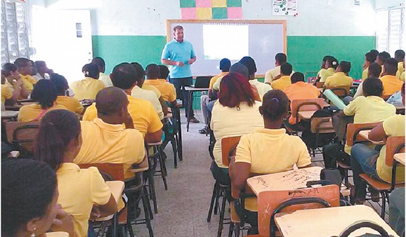
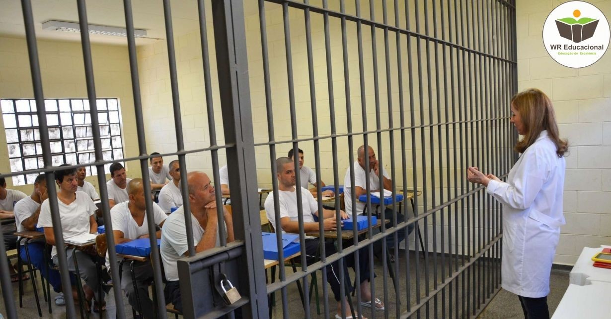
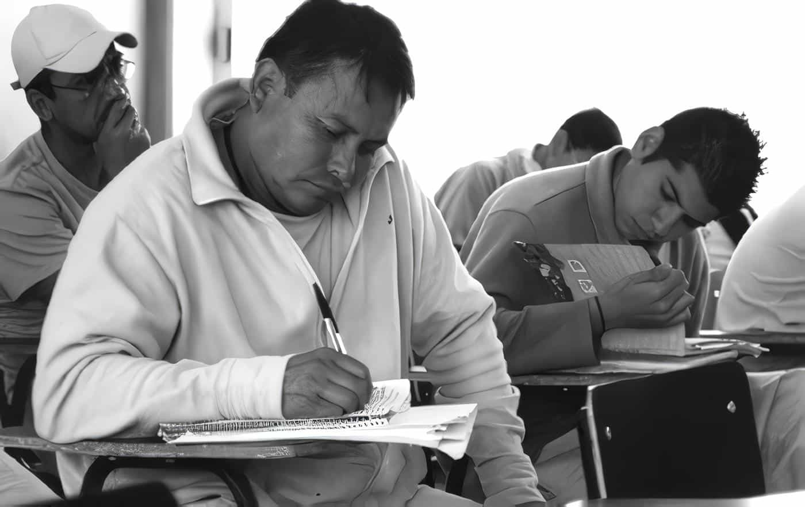

Centros de reinserción social
La educación como camino para reconstruir proyectos de vida.
En centros de privación de la libertad, el pedagogo diseña procesos formativos que promueven habilidades, reflexión crítica y nuevas oportunidades de participación social.
Alfabetización • Formación laboral • Ciudadanía y derechos
Intervención pedagógica en contextos de encierro
Se construyen espacios de confianza donde la palabra, el estudio y el trabajo colectivo ayudan a resignificar historias y fortalecer competencias para la reinserción.
Programas académicos
Talleres artísticos
Formación para el trabajo
Educación en valores
Diagnosticar necesidades educativas y socioemocionales.
Diseñar trayectorias formativas flexibles y pertinentes.
Acompañar procesos individuales y grupales.
Evaluar avances hacia la reinserción social.

Espacios de estudio

Educación sin barreras
Recursos audiovisuales

Reflexión y escritura

Formación para la vida